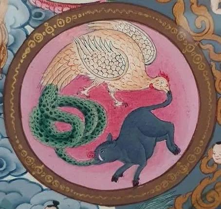

Три яда
Три яда - это три главных состояния ума, которые мешают человеку видеть мир таким, каков он есть, и удерживают его в страдании.

Три яда - это три главных состояния ума, которые мешают человеку видеть мир таким, каков он есть, и удерживают его в страдании. В буддийском учении ими считаются жадность и привязанность, ненависть и отвращение, а также невежество и заблуждение. Их называют ядами потому, что они подобны отраве, которая постепенно поражает разум. Они заставляют человека цепляться за то, что неизбежно изменится, отвергать то, чего он не желает, и принимать заблуждения за истину.
Жадность и привязанность
Первый яд - жадность, или сильная привязанность к желаемому. Человек стремится получить богатство, власть, славу, удовольствие или сохранить рядом с собой людей и вещи, которые ему дороги. Само желание не всегда является злом. Однако, когда человек начинает считать желаемое необходимым для своего счастья и не может отпустить его, возникает привязанность. Тогда потеря желаемого приносит страдание, а получение нового желания лишь создаёт следующее. Жадность заставляет человека постоянно говорить себе: "Мне нужно больше". Она не позволяет ему почувствовать удовлетворение тем, что уже есть.
Ненависть и отвращение
Второй яд - ненависть, гнев и стремление отвергнуть то, что человек считает неприятным. Когда человек сталкивается с болью, оскорблением или несправедливостью, в его сердце легко рождается желание ответить тем же. Гнев может показаться человеку силой, но на самом деле он лишает ум спокойствия. Ослеплённый ненавистью человек перестаёт видеть последствия своих поступков и способен причинить страдание другим, а затем и самому себе. Дхарма не учит терпеть зло без размышлений. Она учит не позволять ненависти становиться хозяином сердца. Даже в трудных обстоятельствах человек должен стремиться сохранять ясность ума и действовать без бессмысленной жестокости.
Невежество и заблуждение
Третий яд - невежество. Это неспособность видеть истинную природу вещей и понимание мира через заблуждения и иллюзии. Человек может считать постоянным то, что изменяется, независимым то, что зависит от множества причин, и источником вечного счастья то, что рано или поздно исчезнет. Невежество является особенно глубоким ядом, потому что из него могут возникать два других. Если человек не понимает природу своих желаний, он цепляется за них. Если он не понимает природу страдания, он отвечает на него гневом.
Поэтому Будда уделял большое значение развитию мудрости. Изучение Дхармы, наблюдение за собственным умом и медитация помогают человеку постепенно рассеивать заблуждение.
Мир приходит изнутри. Не ищи его снаружи.Будда Шьякмуни